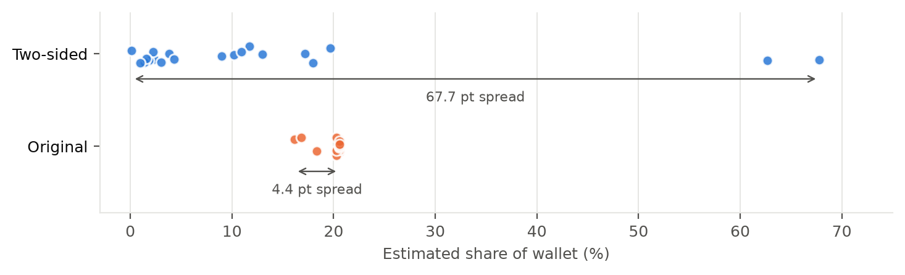
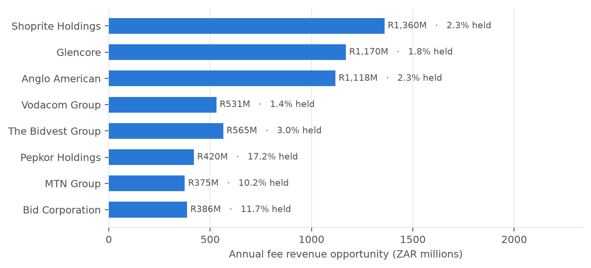

Syn Bank sees every transaction that flows through Syn Bank — and none of the ones that flow through its competitors. Share of wallet therefore cannot be read off the internal data; it must be estimated from outside.
Our first model missed this. It sized the wallet from internal flow, then took captured volume as a fraction of that wallet:
The wallet term cancels. Share was identical to the assumed capture rate and could not depend on the data. It passed every obvious check — values between 0 and 1, a plausible ranking — while giving 20 very different companies the same answer: 4.4 points of spread across a portfolio whose wallets differ by 301×.

The two sides of the ratio are now computed from independent sources.
Share now spans 0.1% to 67.8%
(67.7 points). Every external figure is cited per client in
data/external/company_financials.csv.
| # | Client | Sector | Share | Fee oppty/yr | Lead with |
|---|---|---|---|---|---|
| 1 | Shoprite Holdings | Consumer Goods | 2.3% | R1,360M | Transactional |
| 2 | Glencore | Mining | 1.8% | R1,170M | Transactional |
| 3 | Anglo American | Mining | 2.3% | R1,118M | Transactional |
| 4 | Vodacom Group | Telecoms | 1.4% | R531M | Transactional |
| 5 | The Bidvest Group | Industrials & Pharma | 3.0% | R565M | Transactional |
Ranking blends gap size (50%) with ease of conversion, relationship depth and 90-day urgency, so the list is ordered by winnable value rather than client size. Transactional banking is the lead pillar for 19 of 20 clients — cash-management consolidation is the repeatable conversation.

The model never supplies a number. Figures are computed by the engine, passed in
as an evidence block, and reused verbatim — the model does language, not arithmetic.
Every output is then re-read by a grounding check that flags any rand amount or
percentage absent from the evidence. It writes pre-meeting briefings and answers
open questions over the portfolio, and degrades to deterministic text if the API is
unavailable, so a demo never breaks. Prompts and outputs: prompts/logs/.
Shifting every flow multiple by ±25% moves portfolio share only between 4.0% and 6.7%; the captured side cannot move, because it is measured. Our multiples imply banking fees of ~0.47% of revenue, inside the 0.4–0.7% range the brief itself cites.
20 clients supplied, not the 50 described. Flow multiples are benchmarks, not observations. SA-attribution is judgmental. One revenue figure (Sanlam) is an estimate, flagged and confidence-penalised. Gaps are attributed to competitors, assuming internal records are complete. Lending and DCM are out of scope.
docs/methodology.md.